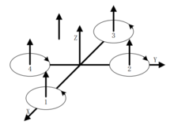
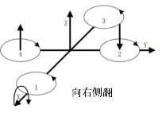
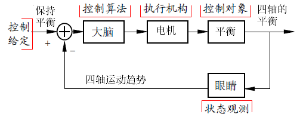
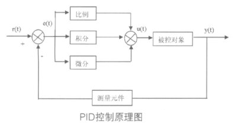
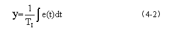
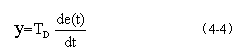
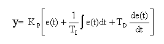
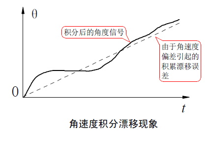

PID控制算法
四軸如何起飛的原理
四軸飛行器的螺旋槳與空氣發生相對運動，產生了向上的升力，當升力大於四軸的重力時四軸就可以起飛了。
四軸飛行器飛行過程中如何保持水平：
我們先假設一種理想狀況：四個電機的轉速是完全相同的
是不是我們控制四軸飛行器的四個電機保持同樣的轉速，當轉速超過一個臨界點時（升力剛好抵消重力）四軸就可以平穩的飛起來了呢？
答案是否定的，由於四個電機轉向相同，四軸會發生旋轉。我們控制四軸電機1和電機3同向，電機2電機4反向，剛好抵消反扭矩，巧妙的實現了平衡：

實際上由於電機和螺旋槳本身製造的差異我們無法做到四個電機轉速完全相同，如果我們控制同樣的轉速很有可能飛行器起飛之後就側翻了。這時候大家可能會想到要用遙控器來控制電機，我們來嘗試一下：

由於電機的不平衡，在人眼的觀察下發現飛機向右側翻，我們控制右側電機1電機2提高轉速增加升力，飛機歸於平衡。由於 飛機是一個動態系統，在接下來我們會一直重複：
觀察->大腦計算->控制->觀察->大腦計算->控制 這個過程。

但事實上這是不可能的，因為人無法長時間精確的同時控制四個電機。我們需要一個自動反饋系統替代人操作來完成飛機的自穩定，我們人只需要控制飛機的方向和高度就可以了。這個系統中反饋由姿態傳感器替代眼睛，而大腦則由單片機來替代。這時候該PID控制系統出場了！
什麼是PID?
PID控制器由偏差的比例（P）、積分（I）和微分（D）來對被控對象進行控制，是應用最為廣泛的一種自動控制器。

- 比例（P）控制
比例控制是一種最簡單的控制方式。其控制器的輸出與輸入誤差信號成比例關係。當僅有比例控制時系統輸出存在穩態誤差（Steady-state error）。
- 積分（I）控制
在積分控制中，控制器的輸出與輸入誤差信號的積分成正比關係。對一個自動控制系統，如果在進入穩態後存在穩態誤差，則稱這個控制系統是有穩態誤差的 或簡稱有差系統（System with Steady-state Error）。為了消除穩態誤差，在控制器中必須引入“積分項”。積分項對誤差取決於時間的積分，隨著時間的增加，積分項會增大。這樣，即便誤差很小，積 分項也會隨著時間的增加而加大，它推動控制器的輸出增大使穩態誤差進一步減小，直到等於零。因此，比例+積分(PI)控制器，可以使系統在進入穩態後無穩 態誤差。 積分項輸出：

- 微分（D）控制
微分調節就是偏差值的變化率。使用微分環節能夠實現系統的超前控制。如果輸入偏差值線性變化，則在調節器輸出側疊加一個恆定的調節量。大部分控制系統不需要調節微分時間。因為只有時間滯後的系統才需要附加這個參數。如果畫蛇添足加上這個參數反而會使系統的控制受到影響。微分項輸出：

綜上所述得到一個一條公式，這個就是模擬PID：

而PID中又可以只使用PI項構成比例-積分控制器，使用PD項構成比例-微分控制器。在Crazepony四軸飛行器中我們使用了增量式PD控制，以ROLL方向角度控制為例：
- 測得ROLL軸向偏差：
偏差=目標期望角度-傳感器實測角度
DIF_ANGLE.X = EXP_ANGLE.X - Q_ANGLE.Roll;
- 比例項的計算：
比例項輸出 = 比例係數P * 偏差
Proportion = PID_Motor.P * DIF_ANGLE.X;
- 微分項計算： 由於陀螺儀測得的是ROLL軸向旋轉角速率，角速率積分就是角度，那麼角度微分即角速率，所以微分量剛好是陀螺儀測得的值。
微分輸出=微分系數D*角速率
DifferentialCoefficient = PID_Motor.D * DMP_DATA.GYROx;
- 整合結果總輸出為：
ROLL方向總控制量=比例項輸出+微分量輸出
ROLL 和PIT軸向按照以上公式計算PID輸出，但YAW軸比較特殊，因為偏航角法線方向剛好和地球重力平行，這個方向的角度無法由加速度計直接測得，需要增加一個電子羅盤來替代加速度計。如果不使用羅盤的話，我們可以單純的通過角速度積分來測得偏航角，缺點是由於積分環節中存在積分漂移，偏航角隨著時間的推移會偏差越來越大。我們不使用羅盤就沒有比例項，只僅使用微分環節來控制。

- YAW軸輸出：
微分輸出=微分系數D*角速率
YAW方向控制量 = PID_YAW.D * DMP_DATA.GYROz;
- 電機的輸出： 油門控制Throttle是電機輸出的基準值，增加油門即可提高四軸高度。最後整合ROLL/PIT/YAW三軸輸出量進行電機控制：

Motor[2] = (int16_t)(Thr - Pitch - Roll - Yaw ); //M3
Motor[0] = (int16_t)(Thr + Pitch + Roll - Yaw ); //M1
Motor[3] = (int16_t)(Thr - Pitch + Roll + Yaw ); //M4
Motor[1] = (int16_t)(Thr + Pitch - Roll + Yaw ); //M2
如圖四軸繞ROW軸向右下傾斜5度，那麼電機1電機2應該提高升力，電機3電機0減小升力恢復平衡狀態，所以有以下規則：
- Roll方向旋轉，則電機1電機2同側出力，電機0電機3反向出力
- Pitch方向旋轉，則電機2電機3同側出力，電機0電機1反向出力
- Yaw方向旋轉，則電機1電機3同側出力，電機0電機2反向出力